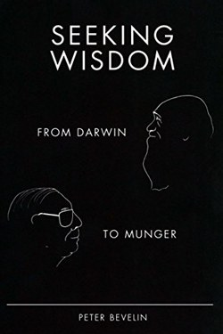

Library › Self-Improvement
Seeking Wisdom — Summary & Key Lessons

From Darwin to Munger: how great minds avoid the mistakes that ruin us — a field guide to mental models.
📖 OPEN THE FULL INTERACTIVE BREAKDOWN →🌐 Read it in Hindi, Hinglish, Gujarati, Tamil & 22 more languages — free, with audio.
💡 The Big Idea
Bevelin distils the shared reasoning habits of Darwin, Munger, Franklin and others into a practical manual: most bad outcomes come from a small set of recurring errors — misjudging incentives, mistaking correlation for cause, wishful thinking, overconfidence, and committing to sunk costs. His method is to ask better questions: what is the evidence, what would make me wrong, who profits from my belief, what does this remind me of?
🧠 The 7 Key Lessons
Lesson 1: Avoid Stupidity, Not Seek Genius
Chapter 1: The Munger Way
Munger's inversion, applied: the best way to be smart is to systematically avoid the big errors. Each chapter of the book is a trap with its antidote. The liberating insight: you do not need to out-think the world — you need to out-stay the mistakes. Great outcomes cluster around people who refuse the obvious traps.
📖 Example: Famous investors lost money the same ways over and over; the survivors were not smarter, just harder to trap. Read the full example →
⚡ Do this: Write your personal 'fool list' — the five mistakes you are prone to — and review it before big decisions.
Lesson 2: Mistaking Cause and Effect
Chapter 2: Correlation vs. Causation
Bevelin's warning: the world is full of things that move together without one causing the other. He uses Darwin's method — actively hunt for what would disprove your theory. The practical rule: before acting on a pattern, ask what else could explain it and what evidence would change your mind.
📖 Example: A company that hired a new CEO and then grew may have grown because of the market — the two events correlate. Read the full example →
⚡ Do this: For one belief you act on, write two alternative explanations and a test that would falsify it.
Lesson 3: The Incentive Trap
Chapter 3: Who Benefits?
Every system has its barbers. Bevelin's question set: who is telling me this, what do they gain, what would they say if their incentives reversed? Salesmen, pundits, even doctor-prescribed drugs — the incentive question precedes the content question. This is why you should never ask the barber whether you need a haircut.
📖 Example: A fund manager who earns fees on your trades has an incentive to trade with you, not for you. Read the full example →
⚡ Do this: Ask the incentive question on your next three pieces of advice — including the advice you give yourself.
Lesson 4: Sunk Cost and the Endowment Effect
Chapter 4: Losing Wisely
We throw good resources after bad because we hate losing — the sunk cost fallacy; and we overvalue what we own — endowment. The fix is the 'selective ignorance' question that Munger uses: if I had nothing invested in this today, would I still invest? If not, the past is a fact, not a reason.
📖 Example: A company keeps a failing product because of the years spent — and every extra year compounds the loss. Read the full example →
⚡ Do this: For the project you are most attached to, ask: if I started fresh today, would I still do this?
Lesson 5: The Question Stack
Chapter 5: The Thinker's Toolkit
The book closes with its most useful gift: the checklist of questions — what am I assuming, what is the evidence quality, what would make me wrong, what is the base rate, what are the second-order effects, what would a wise person I respect say? Wisdom is not spontaneous; it is a stack of questions run deliberately.
📖 Example: Pilots and surgeons use checklists not because they are stupid but because they are human. Read the full example →
⚡ Do this: Write your 6-question decision stack on a card; run it on one decision per week.
Lesson 6: The Avoid List: Inversion as a Filter
Part 3: The Search for Wisdom
Bevelin's most practical tool is borrowed from Munger: write your own 'avoid' list — the criteria that disqualify an opportunity before you study it. Inversion means asking not 'how do I win here?' but 'what would guarantee losing?' — then never going there. A good filter is worth more than a good analyst.
📖 Example: Munger's famous line: 'All I want to know is where I'm going to die, so I'll never go there' — the whole of risk management in one sentence. Read the full example →
⚡ Do this: Write your personal avoid-list (five items, e.g. leverage, crooks, hype, complexity, overreach) and run every new offer through it first.
Lesson 7: The Psychology of Human Misjudgment
Part 4: The Bugs
Bevelin distils Munger's 25 tendencies into a compact catalogue of mental bugs: incentives, self-serving bias, social proof, envy, confirmation, the power of ritual and the pull of the 'lollapalooza' when several combine. The point is not to be free of them — no one is — but to name them when they move you, because a named bias loses half its power.
📖 Example: Salespeople who sell a product daily start believing in it — incentives are the most powerful brainwasher ever devised. Read the full example →
⚡ Do this: Each week, log one named tendency that influenced your decision; after a month you will see your own pattern.
✅ 5-Step Action Plan
- Keep a personal fool list; review before big calls.
- Falsify one belief: two alternatives, one test.
- Add the incentive question to all advice intake.
- Run the fresh-start question on one attached project.
- Use a 6-question stack on one decision a week.
⚠️ When This Doesn't Work
The book is a compilation of others' wisdom with little original evidence; mental models can become a vocabulary that mimics understanding. Use the questions as instruments, not as identity.
💀 The Graveyard Proves It
📷 The Salem Panic — When Fear Became Evidence: 20 Dead on 'Spectral' Testimony. Burn: 20 executed; a society's shame Read the full case study →
💬 Best Quotes from Seeking Wisdom
- “It is remarkable how much long-term advantage people have gotten by trying to be consistently not stupid.”
- “Never ask a barber if you need a haircut.”
- “Show me the incentive and I will show you the outcome.”
Interactive version: mark lessons as read, listen in your language, share quote cards.